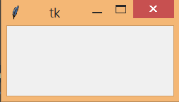
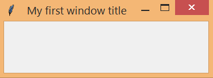
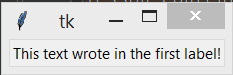
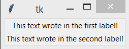
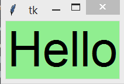
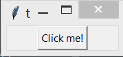
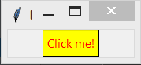

5. Tkinter. Создание графического интерфейса¶
5.1. Создание окна приложения¶
Многие программы на сегодняшний день используют графический интерфейс, который более интуитивен и удобен для пользователя, чем консоль. И с помощью языка программирования Python также можно создавать графические программы. Для этого в Python по умолчанию применяется специальный тулкит - набор компонентов, который называется tkinter.
Тулкит tkinter доступен в виде отдельного встроенного модуля, который содержит все необходимые графические компоненты - кнопки, текстовые поля и т.д.
Базовым моментом в построении графических программ является создание окна. Затем в окно добавляются все остальные компоненты графического интерфейса. Поэтому создадим вначале простейшее окно. Для этого определим следующий скрипт:
from tkinter import *
root = Tk()
'''
any code
'''
root.mainloop()
Для создания графического окна применяется конструктор Tk(), который определен в модуле tkinter. Создаваемое окно присваивается переменной root, и через эту переменную мы можем управлять атрибутами окна. Вместо комментария „“„any code“„“ добавляются все необходимые компоненты окна.
Для отображения окна надо вызвать у него метод mainloop(), который запускает цикл обработки событий окна для взаимодействия с пользователем.
В результате при запуске скрипта мы увидим такое пустое окошко:
C помощью метода title() можно установить заголовок окна.
С помощью метода geometry() - размер окна. Для установки размера в метод geometry() передается строка в формате «Ширина x Высота». Если при создании окна приложения метод geometry() не вызывается, то окно занимает то пространство, которое необходимо для размещения внутреннего содержимого:
from tkinter import *
root = Tk()
root.title('My first window title')
root.geometry('350x200')
root.mainloop()
Результат выполнения:
5.1.1. Начальная позиция окна¶
По умолчанию окно позиционируется в верхний левый угол экрана. Но мы можем изменить его положение, передав нужные значения в метод geometry():
from tkinter import *
root = Tk()
root.title("My second Python window")
root.geometry("400x300+300+250")
root.mainloop()
Теперь строка в методе geometry имеет следующий формат: «Ширина x Высота + координатаX + координатаY». То есть при запуске окно будет находиться на 300 пикселей вправо и на 250 пикселей вниз от верхнего левого угла экрана.
5.2. Label - метка¶
Тулкит tkinter содержит набор компонентов или виджетов, одним из которых является метка - label. Метки (или надписи) — это достаточно простые виджеты, содержащие строку (или несколько строк) текста и служащие в основном для информирования пользователя.
Добавим кнопку в окно:
from tkinter import *
root = Tk()
lbl = Label(root, text="This text wrote in the first label!")
lbl.pack()
root.mainloop()
Для создания метки используется конструктор Label(). В этом конструкторе с помощью параметра text можно установить текст виджета. Чтобы сделать элемент видимым, у него вызывается метод pack(). В итоге вверху окна будет красоваться метка с текстом:
Для создания двух и более виджетов достаточно просто создать кнопку и добавить его в окно:
from tkinter import *
root = Tk()
lbl = Label(root, text="This text wrote in the first label!")
lbl2 = Label(root, text="This text wrote in the second label!")
lbl.pack()
lbl2.pack()
root.mainloop()
Результат выполнения:
Каждый виджет, имеет ряд атрибутов, которые влияют на ее визуализацию и которые мы можем настроить через конструктор:
from tkinter import *
root = Tk()
lbl = Label(root, text="Hello", font=("Arial Bold", 50), bg="lightgreen")
lbl.pack()
root.mainloop()
Результат выполнения:
5.3. Button - кнопка¶
Для создания кнопки используется конструктор Button(). В этом конструкторе с помощью параметра text можно установить текст кнопки:
from tkinter import *
root = Tk()
btn = Button(root, text="Click me!")
btn.pack()
root.mainloop()
Чтобы сделать элемент видимым, у него вызывается метод pack(). В итоге вверху окна будет красоваться кнопка:
Каждый виджет, в том числе кнопка, имеет ряд атрибутов, которые влияют на ее визуализацию и которые мы можем настроить через конструктор:
from tkinter import *
root = Tk()
btn = Button(root, text="Click me!", fg="red", bg="yellow")
btn.pack()
root.mainloop()
Параметры bg - background и fg - foreground получают значение цвета. Результат выполнения:
5.4. Параметры виджетов¶
Всего же конструктор Button может принимать следующие параметры:
Button(master, options)
Параметр master представляет ссылку на родительский контейнер. В случае выше это могло бы быть само графическое окно, и мы могли написать:
root = Tk()
root.title("GUI на Python")
root.geometry("300x250")
btn = Button(root, text="Hello")
btn.pack()
Однако если в коде создается одно окно, то кнопка и любой другой элемент уже по умолчанию размещаются в этом окне. Поэтому первый параметр мы можем опустить, как в примерах выше. Если бы у нас в коде создавалось бы несколько окон, тогда мы могли бы передать в конструктор Button ссылку на нужное окно.
Второй параметр options представляет набор на самом деле набор параметров, которые мы можем установить по их имени:
- activebackground: цвет элемента, когда он находится в нажатом состоянии
- activeforeground: цвет текста элемента, когда он в нажатом состоянии
- bd: толщина границы (по умолчанию 2)
- bg/background: фоновый цвет
- fg/foreground: цвет текста
- font: шрифт текста, например, font=»Arial 14» - шрифт Arial высотой 14px, или font=(«Verdana», 13, «bold») - шрифт Verdana высотой 13px с выделением жирным
- height: высота элемента
- highlightcolor: цвет элемента, когда она в фокусе
- image: изображение на элементе
- justify: устанавливает выравнивание текста. Значение LEFT выравнивает текст по левому краю, CENTER - по центру, RIGHT - по правому краю
- padx: отступ от границ элемента до ее текста справа и слева
- pady: отступ от границ элемента до ее текста сверху и снизу
- relief: определяет тип границы, может принимать значения SUNKEN, RAISED, GROOVE, RIDGE
- state: устанавливает состояние элемента, может принимать значения DISABLED, ACTIVE, NORMAL (по умолчанию)
- text: устанавливает текст элемента
- textvariable: устанавливает привязку к элементу StringVar
- underline: указывает на номер символа в тексте элемента, который подчеркивается. По умолчанию значение -1, то есть никакой символ не подчеркивается
- width: ширина элемента
- wraplength: при положительном значении строки текста будут переносится для вмещения в пространство элемента